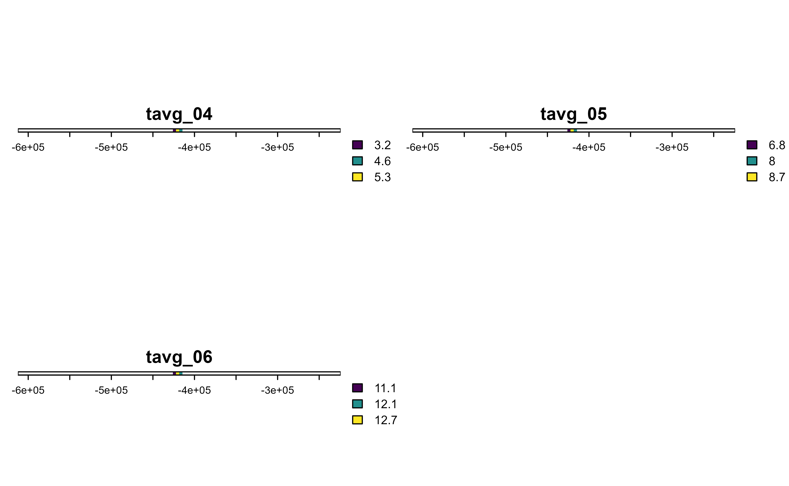
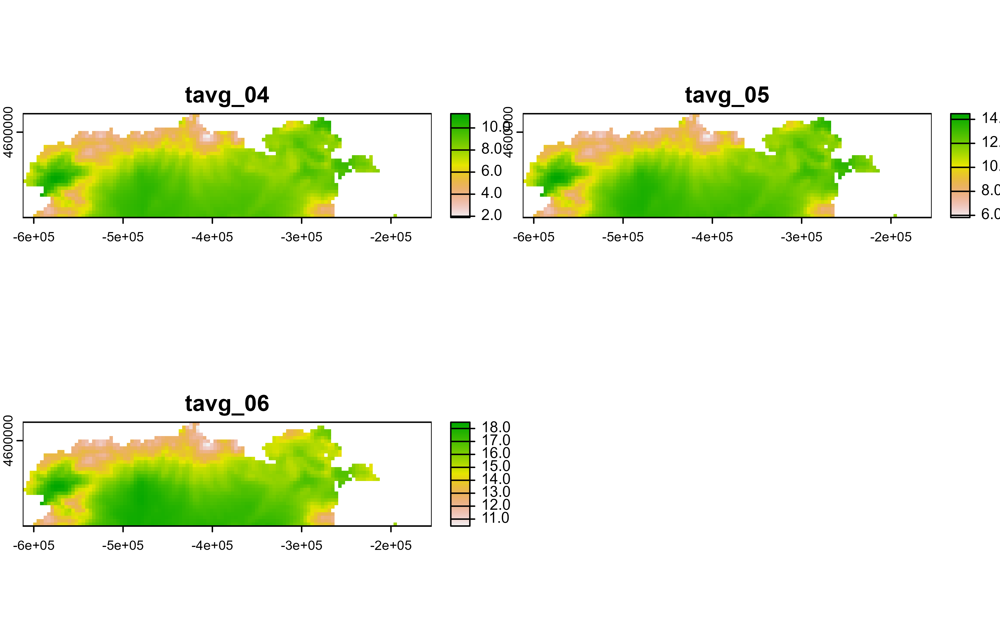
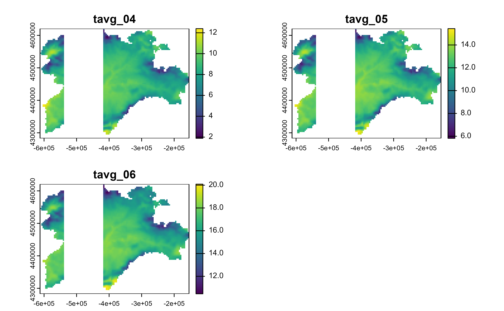
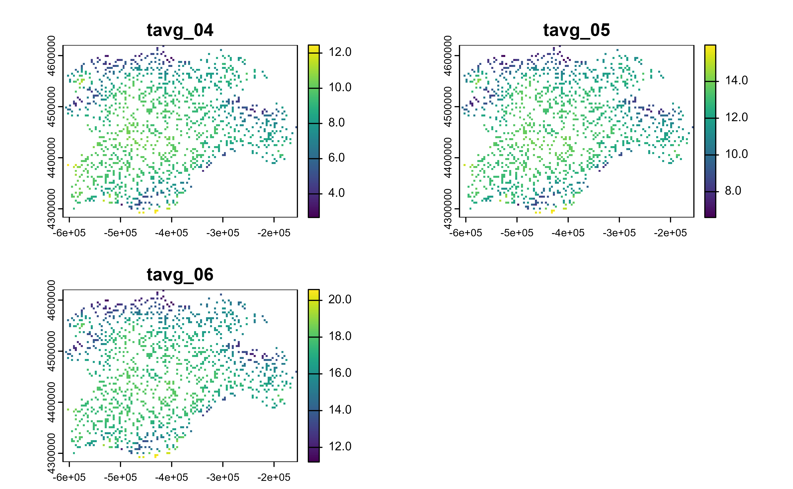
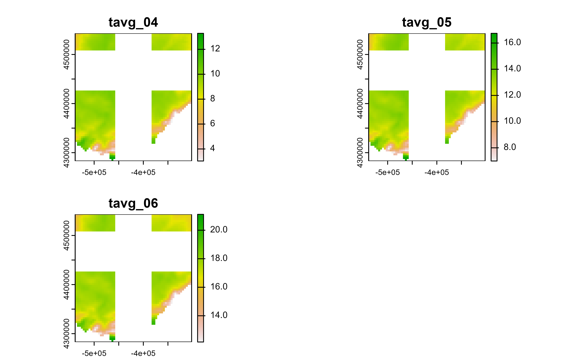
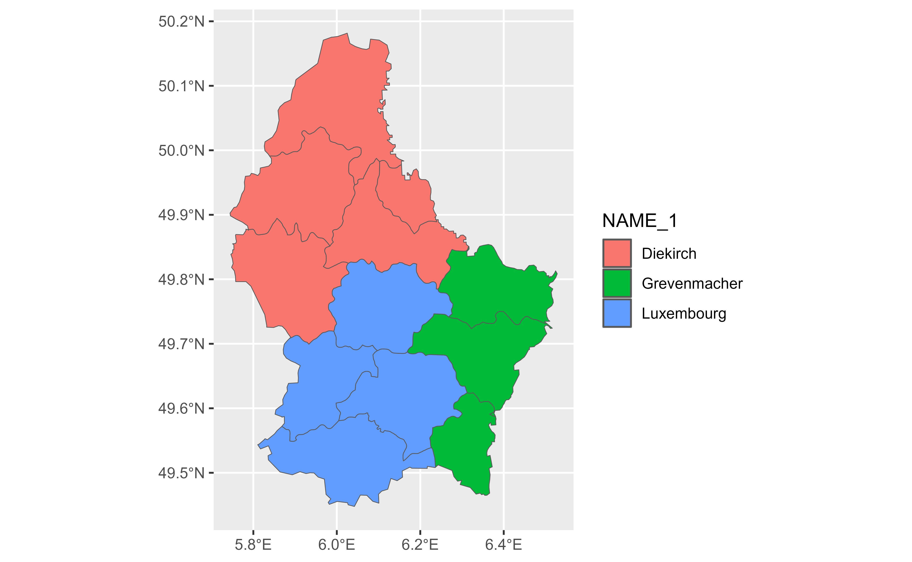
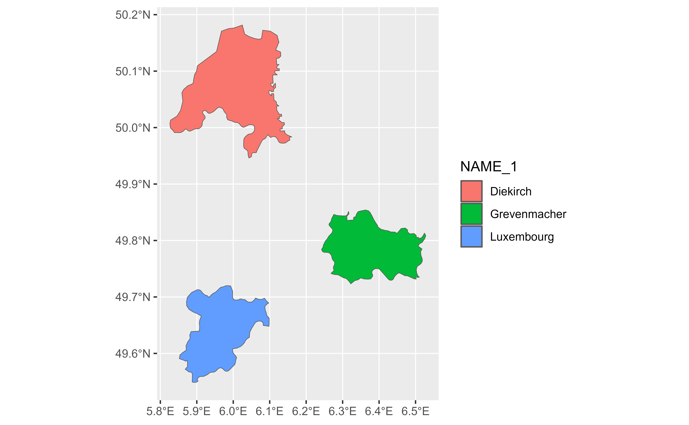
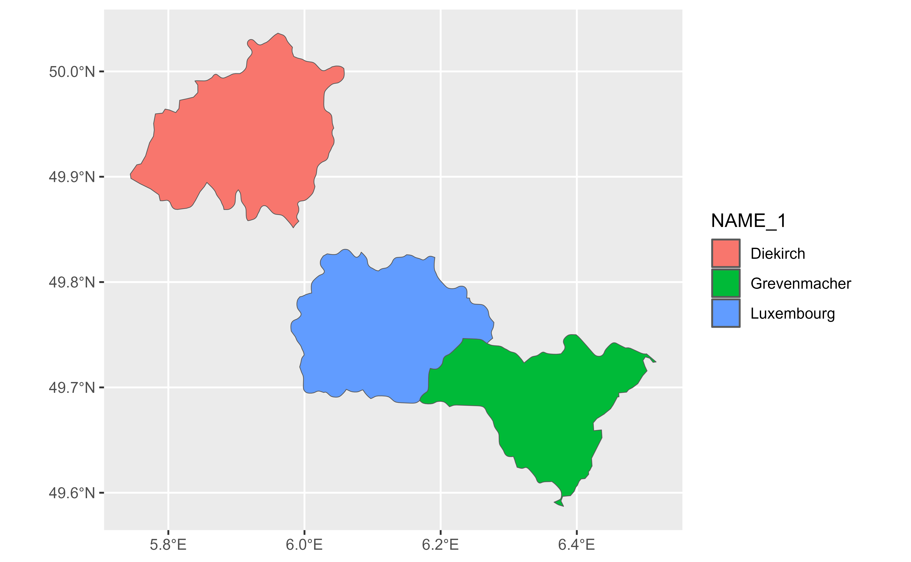
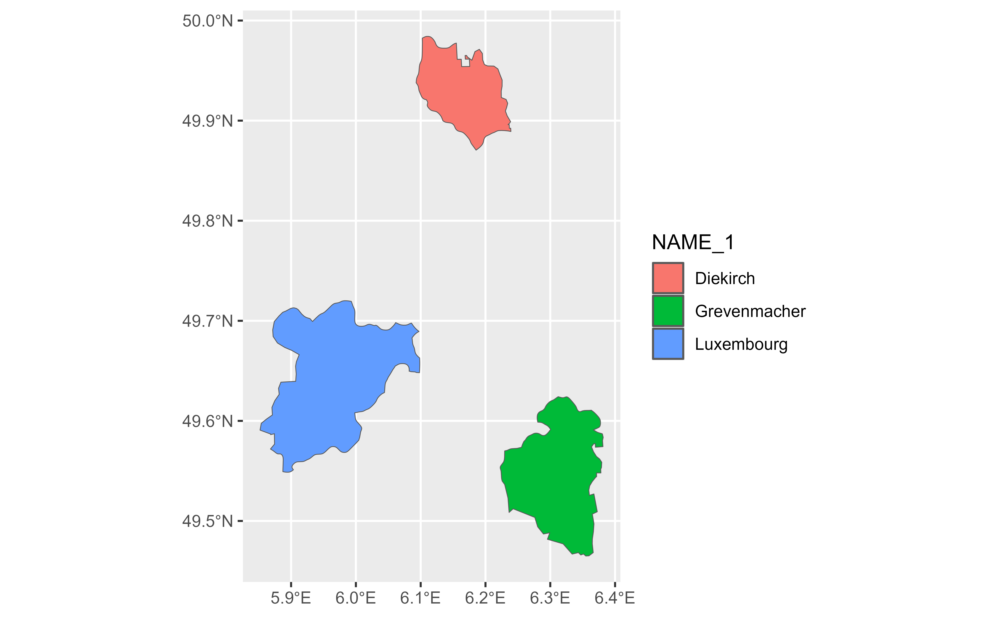
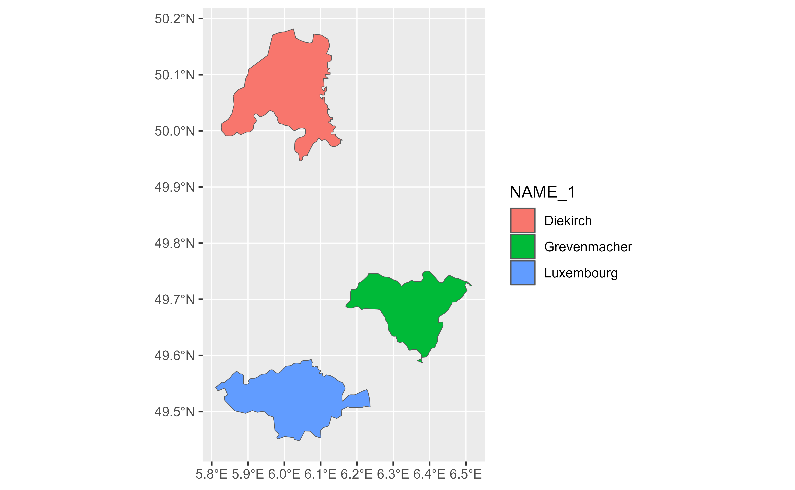

slice() lets you index cells/rows/columns/geometries by their (integer)
locations. It allows you to select, remove, and duplicate those dimensions
of a Spat* object.
If you want to slice your SpatRaster by geographic coordinates use
filter.SpatRaster() method.
It is accompanied by a number of helpers for common use cases:
slice_head()andslice_tail()select the first or last cells/geometries.slice_sample()randomly selects cells/geometries.slice_rows()andslice_cols()allow to subset entire rows or columns, of a SpatRaster.slice_colrows()subsets regions of the raster by row and column position of a SpatRaster.
You can get a skeleton of your SpatRaster with the cell, column and row
index with as_coordinates().
See Methods for details.
Usage
# S3 method for SpatRaster
slice(.data, ..., .preserve = FALSE, .keep_extent = FALSE)
# S3 method for SpatVector
slice(.data, ..., .preserve = FALSE)
# S3 method for SpatRaster
slice_head(.data, ..., n, prop, .keep_extent = FALSE)
# S3 method for SpatVector
slice_head(.data, ..., n, prop)
# S3 method for SpatRaster
slice_tail(.data, ..., n, prop, .keep_extent = FALSE)
# S3 method for SpatVector
slice_tail(.data, ..., n, prop)
# S3 method for SpatRaster
slice_min(
.data,
order_by,
...,
n,
prop,
with_ties = TRUE,
.keep_extent = FALSE,
na.rm = TRUE
)
# S3 method for SpatVector
slice_min(.data, order_by, ..., n, prop, with_ties = TRUE, na_rm = FALSE)
# S3 method for SpatRaster
slice_max(
.data,
order_by,
...,
n,
prop,
with_ties = TRUE,
.keep_extent = FALSE,
na.rm = TRUE
)
# S3 method for SpatVector
slice_max(.data, order_by, ..., n, prop, with_ties = TRUE, na_rm = FALSE)
# S3 method for SpatRaster
slice_sample(
.data,
...,
n,
prop,
weight_by = NULL,
replace = FALSE,
.keep_extent = FALSE
)
# S3 method for SpatVector
slice_sample(.data, ..., n, prop, weight_by = NULL, replace = FALSE)
slice_rows(.data, ...)
# S3 method for SpatRaster
slice_rows(.data, ..., .keep_extent = FALSE)
slice_cols(.data, ...)
# S3 method for SpatRaster
slice_cols(.data, ..., .keep_extent = FALSE)
slice_colrows(.data, ...)
# S3 method for SpatRaster
slice_colrows(.data, ..., cols, rows, .keep_extent = FALSE, inverse = FALSE)Arguments
- .data
A SpatRaster created with
terra::rast()or a SpatVector created withterra::vect().- ...
data-maskingInteger row values. Provide either positive values to keep, or negative values to drop.The values provided must be either all positive or all negative. Indices beyond the number of rows in the input are silently ignored. See Methods.
- .preserve
Ignored for Spat* objects
- .keep_extent
Should the extent of the resulting SpatRaster be kept? See also
terra::trim(),terra::extend().- n, prop
Provide either
n, the number of rows, orprop, the proportion of rows to select. If neither are supplied,n = 1will be used. Ifnis greater than the number of rows in the group (orprop > 1), the result will be silently truncated to the group size.propwill be rounded towards zero to generate an integer number of rows.A negative value of
norpropwill be subtracted from the group size. For example,n = -2with a group of 5 rows will select 5 - 2 = 3 rows;prop = -0.25with 8 rows will select 8 * (1 - 0.25) = 6 rows.- order_by
<
data-masking> Variable or function of variables to order by. To order by multiple variables, wrap them in a data frame or tibble.- with_ties
Should ties be kept together? The default,
TRUE, may return more rows than you request. UseFALSEto ignore ties, and return the firstnrows.- na.rm
Logical, should cells that present a value of
NAremoved when computingslice_min()/slice_max()?. The default isTRUE.- na_rm
Should missing values in
order_bybe removed from the result? IfFALSE,NAvalues are sorted to the end (like inarrange()), so they will only be included if there are insufficient non-missing values to reachn/prop.- weight_by
<
data-masking> Sampling weights. This must evaluate to a vector of non-negative numbers the same length as the input. Weights are automatically standardised to sum to 1.- replace
Should sampling be performed with (
TRUE) or without (FALSE, the default) replacement.- cols, rows
Integer col/row values of the SpatRaster
- inverse
If
TRUE,.datais inverse-masked to the given selection. Seeterra::mask().
Methods
Implementation of the generic dplyr::slice() function.
SpatRaster
The result is a SpatRaster with the crs and resolution of the input and where cell values of the selected cells/columns/rows are preserved.
Use .keep_extent = TRUE to preserve the extent of .data on the output.
The non-selected cells would present a value of NA.
SpatVector
The result is a SpatVector where the attributes of the selected
geometries are preserved. If .data is a
grouped SpatVector, the operation will be performed
on each group, so that (e.g.) slice_head(df, n = 5) will select the first
five rows in each group.
See also
dplyr::slice(), terra::spatSample().
You can get a skeleton of your SpatRaster with the cell, column and row
index with as_coordinates().
If you want to slice by geographic coordinates use filter.SpatRaster().
Other single table verbs:
arrange.SpatVector(),
filter.Spat,
mutate.Spat,
rename.Spat,
select.Spat,
summarise.SpatVector()
Other dplyr verbs that operate on rows:
arrange.SpatVector(),
distinct.SpatVector(),
filter.Spat
Other dplyr methods:
arrange.SpatVector(),
bind_cols.SpatVector,
bind_rows.SpatVector,
count.SpatVector(),
distinct.SpatVector(),
filter-joins.SpatVector,
filter.Spat,
glimpse.Spat,
group-by.SpatVector,
mutate-joins.SpatVector,
mutate.Spat,
pull.Spat,
relocate.Spat,
rename.Spat,
rowwise.SpatVector(),
select.Spat,
summarise.SpatVector()
Examples
library(terra)
f <- system.file("extdata/cyl_temp.tif", package = "tidyterra")
r <- rast(f)
# Slice first 100 cells
r %>%
slice(1:100) %>%
plot()

# Rows
r %>%
slice_rows(1:30) %>%
plot()

# Cols
r %>%
slice_cols(-(20:50)) %>%
plot()

# Spatial sample
r %>%
slice_sample(prop = 0.2) %>%
plot()

# Slice regions
r %>%
slice_colrows(
cols = c(20:40, 60:80),
rows = -c(1:20, 30:50)
) %>%
plot()

# Group wise operation with SpatVectors--------------------------------------
v <- terra::vect(system.file("ex/lux.shp", package = "terra"))
# \donttest{
glimpse(v) %>% autoplot(aes(fill = NAME_1))
#> Rows: 12
#> Columns: 6
#> $ ID_1 <dbl> 1, 1, 1, 1, 1, 2, 2, 2, 3, 3, 3, 3
#> $ NAME_1 <chr> "Diekirch", "Diekirch", "Diekirch", "Diekirch", "Diekirch", "Gr…
#> $ ID_2 <dbl> 1, 2, 3, 4, 5, 6, 7, 12, 8, 9, 10, 11
#> $ NAME_2 <chr> "Clervaux", "Diekirch", "Redange", "Vianden", "Wiltz", "Echtern…
#> $ AREA <dbl> 312, 218, 259, 76, 263, 188, 129, 210, 185, 251, 237, 233
#> $ POP <int> 18081, 32543, 18664, 5163, 16735, 18899, 22366, 29828, 48187, 1…

gv <- v %>% group_by(NAME_1)
# All slice helpers operate per group, silently truncating to the group size
gv %>%
slice_head(n = 1) %>%
glimpse() %>%
autoplot(aes(fill = NAME_1))
#> Rows: 3
#> Columns: 6
#> Groups: NAME_1 [3]
#> $ ID_1 <dbl> 1, 2, 3
#> $ NAME_1 <chr> "Diekirch", "Grevenmacher", "Luxembourg"
#> $ ID_2 <dbl> 1, 6, 8
#> $ NAME_2 <chr> "Clervaux", "Echternach", "Capellen"
#> $ AREA <dbl> 312, 188, 185
#> $ POP <int> 18081, 18899, 48187

gv %>%
slice_tail(n = 1) %>%
glimpse() %>%
autoplot(aes(fill = NAME_1))
#> Rows: 3
#> Columns: 6
#> Groups: NAME_1 [3]
#> $ ID_1 <dbl> 1, 2, 3
#> $ NAME_1 <chr> "Diekirch", "Grevenmacher", "Luxembourg"
#> $ ID_2 <dbl> 5, 12, 11
#> $ NAME_2 <chr> "Wiltz", "Grevenmacher", "Mersch"
#> $ AREA <dbl> 263, 210, 233
#> $ POP <int> 16735, 29828, 32112

gv %>%
slice_min(AREA, n = 1) %>%
glimpse() %>%
autoplot(aes(fill = NAME_1))
#> Rows: 3
#> Columns: 6
#> Groups: NAME_1 [3]
#> $ ID_1 <dbl> 1, 2, 3
#> $ NAME_1 <chr> "Diekirch", "Grevenmacher", "Luxembourg"
#> $ ID_2 <dbl> 4, 7, 8
#> $ NAME_2 <chr> "Vianden", "Remich", "Capellen"
#> $ AREA <dbl> 76, 129, 185
#> $ POP <int> 5163, 22366, 48187

gv %>%
slice_max(AREA, n = 1) %>%
glimpse() %>%
autoplot(aes(fill = NAME_1))
#> Rows: 3
#> Columns: 6
#> Groups: NAME_1 [3]
#> $ ID_1 <dbl> 1, 2, 3
#> $ NAME_1 <chr> "Diekirch", "Grevenmacher", "Luxembourg"
#> $ ID_2 <dbl> 1, 12, 9
#> $ NAME_2 <chr> "Clervaux", "Grevenmacher", "Esch-sur-Alzette"
#> $ AREA <dbl> 312, 210, 251
#> $ POP <int> 18081, 29828, 176820

# }